ESPEED32 Manuale Utente
Guida pratica per usare il controller in pista: avvio, regolazioni principali di guida, menu e backup/restore.
- Sorgente firmware: ESPEED32 (
source/ESPEED32/). - Manuali locali nel repo: Quick Start + Extended Guide (cartella DOC, DOCX/PDF).
- Riferimento ACD: ACD PRO Manual 11E.
- Riferimento CarSteen: CS 4.2 Owner's Guide.
La documentazione utente su espeed32.com mostra sempre l'ultima versione pubblicata. La copia salvata nel controller segue la versione firmware effettivamente installata su quell'unita e viene aggiornata insieme ad essa.
1. Avvio rapido
- Accendi il controller normalmente.
- Ruota l'encoder per spostarti nel menu.
- Pressione breve dell'encoder: entra/esci dalla modifica o apri un sottomenu.
- Pressione breve del pulsante freno durante la modifica: annulla e ripristina il valore originale.
- Pressione lunga dell'encoder (~1s): passa tra vista LIST e GRID se race view non e su OFF.
2. Avvio, calibrazione e self-test
- Ricalibra il trigger dopo un aggiornamento firmware o se modifichi la meccanica del grilletto.
Power ON: avvio normale e poi modalita RUNNING.- Per build con
TLE493D, variante e indirizzo del sensore vengono rilevati automaticamente all'avvio. - Tieni premuto
encoder buttondurante l'accensione: calibrazione trigger. - Tieni premuto
brake buttondurante l'accensione: Self-Test (9 passi).
Flusso di calibrazione
- Tieni premuto l'encoder mentre accendi finche appare la schermata di calibrazione.
- Premi e rilascia completamente il trigger piu volte.
- Premi l'encoder una volta per salvare.
- Verifica 0% con trigger rilasciato e 100% con trigger completamente tirato.
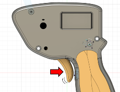
Meccanica del trigger
- La corsa del trigger puo essere regolata meccanicamente con la vite di fine corsa posteriore.
- Il ritorno dipende dal precarico della molla / tensione di ritorno; regola con cautela il supporto o il cursore della molla.
- Dopo aver cambiato corsa o tensione della molla, o se il controller e stato aperto, ricalibra il trigger prima di guidare.
3. Display, vista gara e ABOUT
Questa sezione raccoglie cio che vedi sull'OLED: lingua, stile etichette, vista gara, barra di stato e informazioni di sistema.
Lingua e display
DISPLAY -> LANGUAGEsceglie tra etichette localizzate e i profili di nomi ENG/CS/ACD.NOR/ESP/DEU/ITA: interfaccia localizzata con i nomi standardBRAKE/SENSI/ANTIS/CURVE/FADE/LIMIT.ENG: nomi generici (BRAKE/SENSI/ANTIS/CURVE/FADE/LIMIT).CS: stile CarSteen (ATTACK/CHOKE2/PROFIL/CHOKE1).ACD: stile ACD dove esiste una corrispondenza diretta (SENSIeCHOKEper LIMIT).DISPLAY -> CASEsceglie se mostrare le etichette inUPPERoPascal.DISPLAY -> FONT SIZEcambia la vista lista/menu traLARGEesmall.
Vista gara (LIST vs GRID)
- LIST vista classica con tutte le voci del menu principale.
- GRID schermata gara per modifiche rapide mentre guidi.
DISPLAY -> RACE MODE: OFF / FULL / SIMPLE.- FULL: BRAKE, SENSI, ANTIS, CURVE (+ CAR se
RACESWPe ON). - SIMPLE: BRAKE, SENSI (+ CAR se
RACESWPe ON). - Una pressione lunga dell'encoder cambia LIST/GRID.
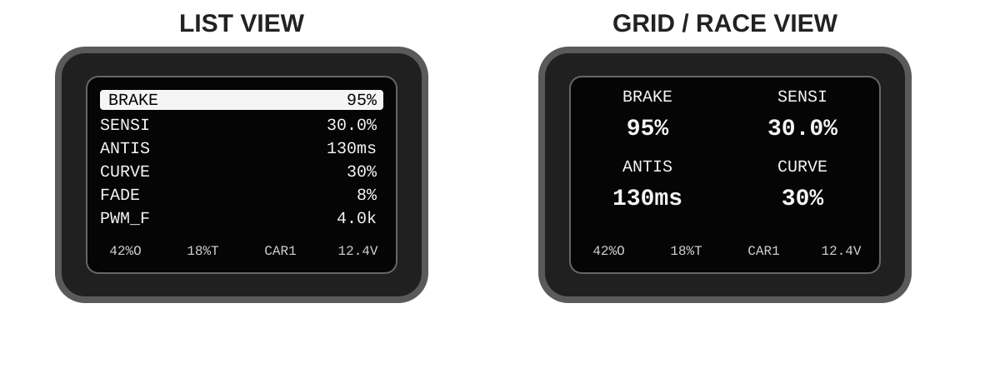
Barra di stato e ABOUT
STATUS BAR: 4 slot fissi. Ogni slot puo mostrareOUT%,THRO,CAR,CURR,VOLToppure vuoto.- Quando il WiFi e attivo, la barra di stato mostra
WIFI. Usa il primo slot vuoto se disponibile; altrimenti sostituisce temporaneamente lo slot 4. ABOUTmostra versione firmware/dati, sensore trigger rilevato, dettagli chip, flash/heap, indirizzi MAC e data/ora build.
4. Menu CAR e Car Params
Il menu CAR gestisce i profili auto. Ogni profilo salva i propri Car Params, cioe valori come BRAKE, SENSI, ANTIS, CURVE, FADE, PWM_F, FRENO+ e LIMIT. E' lo stesso gruppo di parametri che ritrovi piu avanti nell'Advanced Config Editor.
SELECT: scegli il profilo attivo (0-19).RENAME: editor nome a 4 caratteri (ASCII 32-122). Vedi tabella ASCII.RACESWP: ON permette di cambiare profilo direttamente dalla vista GRID.COPY: copia da un profilo a un altro o verso tutti i profili.RESET: ripristina tutti i profili auto con conferma.
5. Parametri di guida
Questa sezione raccoglie i parametri principali che definiscono la sensazione del controller in pista.
BRAKE e FRENO+
BRAKE
Con il trigger completamente rilasciato, il controller applica la frenata normale usando il valore BRAKE.
FRENO+ nel menu principale apre il sottomenu freni avanzati. Li ora trovi Alt.Freno e Rel.Freno.
Freno alternativo (Alt.Freno)
Alt.Frenoindica un valore di freno alternativo (0-100%), non una riduzione relativa.- Si applica solo quando trigger = 0 e tieni premuto il pulsante freno.
- Se la barra di stato mostra OUTPUT, appare
Bxxx%mentre il pulsante freno e premuto. - Uso tipico: frenata temporaneamente piu forte o piu dolce in ingresso curva senza cambiare il setup base.
- Alcuni piloti preferiscono
Alt.Frenopiu basso del normaleBRAKEper un freno a pulsante piu dolce, mentre altri lo preferiscono piu alto per una frenata piu netta. Questa parte dipende soprattutto dalle preferenze del pilota e dalla sensazione dell'auto.
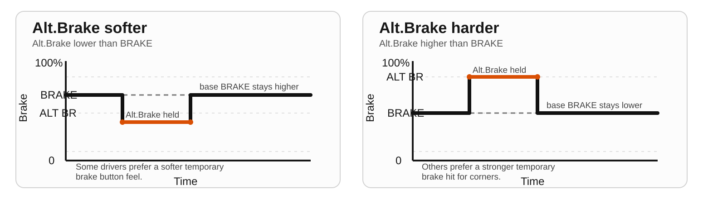
Alt.Freno puo essere impostato temporaneamente piu dolce o piu forte del BRAKE normale, a seconda delle preferenze del pilota.Freno di rilascio (Rel.Freno)
Rel.Frenoindica il freno di rilascio e ha tre modi:OFF,QUICKeDRAG.QUICKe la vecchia zona di frenata anticipata: sotto laZonascelta il controller taglia la trazione e applicaLivellocome forza frenante.DRAGagisce solo mentre stai rilasciando il trigger. Lascia attiva la trazione, miscela drag durante il movimento di rilascio e risulta piu morbido di QUICK.Zonaviene usata solo daQUICK. In QUICK e una vera zona a output zero vicino al rilascio del trigger.- Per questo con
QUICKattivo e normale vedere qualche%Tsul display mentre l'output resta a0%finche il trigger non supera la zona selezionata. - Differenza principale:
QUICKfa un taglio netto dentro la zona, mentreDRAGlascia attiva la curva gas e aggiunge drag solo mentre il trigger sta tornando verso il rilascio. - Uso tipico di QUICK: piste o auto che richiedono una frenata anticipata molto chiara. Esempio:
Zona6-10% eLivello70-100% per una frenata forte e ripetibile quando inizi a rilasciare l'ultima parte della corsa trigger. - Uso tipico di DRAG: auto nervose che con QUICK risultano troppo brusche. Esempio:
Livello20-50% per aggiungere una decelerazione dolce al rilascio senza la sensazione di taglio totale a zero. QUICK Zona: 0-50%.Livello: 0-100%.- Usa QUICK per una frenata anticipata piu netta. Usa DRAG se vuoi un aiuto al rilascio piu progressivo.
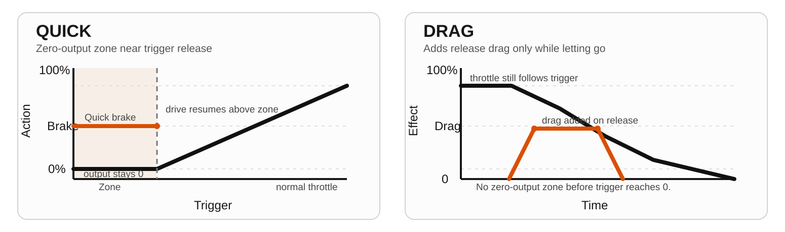
Da CarSteen/ACD a ESPEED32
| Termine vecchio | Equivalente ESPEED32 | Effetto pratico |
|---|---|---|
| Attack | SENSI | Quanto forte risponde l'auto al primo movimento del trigger. |
| Choke / Choke2 | LIMIT + ANTIS | Limita il top-end e regola quanto morbida sale la potenza. |
| Profile | CURVE | Forma della risposta del trigger (aggressiva prima o dopo). |
| Brake | BRAKE + FRENO+ | Freno base insieme a freno pulsante e freno di rilascio nel sottomenu dedicato. |
Esempio di setup iniziale "morbido e controllato" da guide piu vecchie: prova circa SENSI 40, ANTIS 130 ms, CURVE 30 e poi rifinisci da li.
Riferimento rapido del menu principale
| Voce | Intervallo | Default | Descrizione |
|---|---|---|---|
BRAKE | 0-100 % | 95 | Frenata con trigger rilasciato. |
SENSI | 0-90 % (e <= LIMIT) | 20 | Potenza minima al primo movimento utile del trigger. |
ANTIS | 0-999 ms | 30 | Rampa anti-spin. Valore piu alto = erogazione piu morbida. Il passo encoder si imposta globalmente in SETTINGS -> A STEP. |
CURVE | 10-90 % | 50 | Curva del trigger. 50 = lineare. |
FADE | 0-30 % | 0 | Zona di avvio morbido. 0 = disattivato / comportamento precedente. Sopra 0, la prima parte del trigger sale da 0 a SENSI prima che continui la CURVE normale. |
PWM_F | 1.0-5.0 kHz | 4.0 | Frequenza PWM del motore. |
FRENO+ / Alt.Freno | 0-100 % | 50 | Freno alternativo mentre il pulsante freno e premuto e trigger=0. |
FRENO+ / Rel.Freno | OFF/QUICK(zona+livello)/DRAG(livello) | OFF | Aiuto frenata vicino al rilascio del trigger. QUICK usa una zona a output zero; DRAG aggiunge drag senza zona. |
LIMIT | (SENSI+5)-100 % | 100 | Uscita massima del motore. |
STATS | - | - | Contagiri, miglior giro e cronologia scorrevole dei giri. |
CAR | 0-19 profili | CAR0 | Seleziona o gestisci il profilo attivo. |
FADE nella pratica
FADEcrea una rampa morbida0 -> SENSIall'inizio della corsa trigger.FADE = 0%lo disattiva e mantiene la risposta diretta di prima.- Prova
5-15%se l'auto e troppo brusca proprio nel momento in cui inizia SENSI. - Pensa a
FADEcome a un primo punto extra nel grafico: cambia solo la parte bassa, mentreCURVEcontinua a modellare il resto.
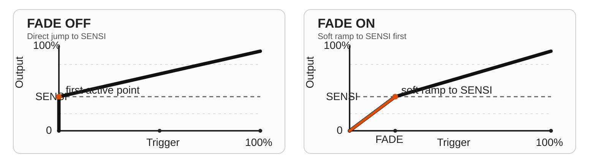
Valori tipici di partenza
Sono punti di partenza, non regole rigide. Servono per arrivare vicino al setup giusto e poi rifinire un parametro alla volta.
I valori corretti dipendono comunque molto dall'auto specifica, dal motore, dalle gomme, dal grip della pista e anche dal tuo stile di guida personale.
| Setup | SENSI | BRAKE | ANTIS | CURVE | FADE | PWM_F |
|---|---|---|---|---|---|---|
| 1/32 bilanciata | 28-35% | 90-95% | 40-90 ms | 40-50% | 0-6% | 4.0 kHz |
| 1/32 poco grip | 22-30% | 90-95% | 100-150 ms | 30-45% | 5-12% | 4.0 kHz |
| 1/24 bilanciata | 35-45% | 95-100% | 0-30 ms | 50-60% | 0-5% | 4.0 kHz |
| 1/24 molto grip | 40-50% | 95-100% | 0-15 ms | 55-70% | 0-3% | 4.0 kHz |
Per i primi test, lascia Rel.Freno su OFF. Aggiungi QUICK o DRAG solo quando la base di gas e freno e gia a posto.
Note sulla linearita
LIMIT: limite lineare dell'output comandato in %. La velocita massima reale in pista non risulta perfettamente lineare.BRAKE: comando freno/drag lineare in %. La sensazione reale di frenata dipende da motore, gomme e grip della pista.SENSI: livello minimo di output lineare in %, ma non e una manopola di gain lineare su tutta la corsa del trigger percheCURVEmodella il resto.FADE: lineare in % di corsa trigger. Lavora solo nella prima parte e poi lascia il controllo aCURVE.ANTIS: e soprattutto un'impostazione di tempo in ms. Quando anti-spin e attivo, un valore piu alto produce una rampa piu lunga/morbida, ma la sensazione complessiva non e perfettamente lineare perche cambia anche la soglia di bypass alle basse velocita.
Esempi di CURVE
Queste figure mostrano prima la forma della risposta, poi separatamente frequenza PWM e limite di duty.
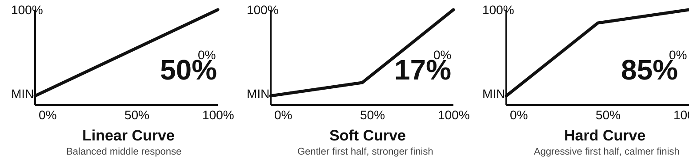
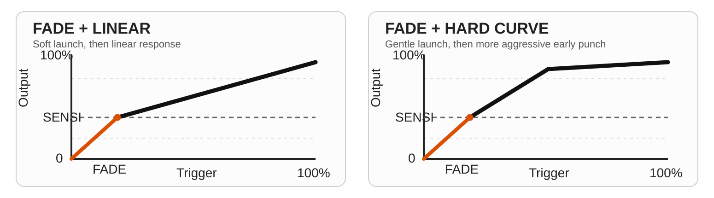
LIMIT nella pratica
LIMIT 100permette al controller di arrivare al duty pieno quando trigger e curva lo richiedono.LIMIT 70limita il duty massimo a circa 70%, anche con il trigger completamente premuto.
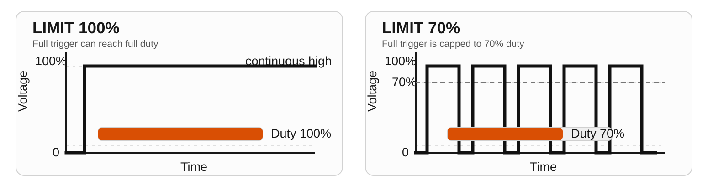
PWM_F nella pratica
PWM_Fcambia quanto spesso commuta l'uscita, non il duty richiesto di per se.- Con
LIMIT 100, il trigger parziale puo ancora lavorare a duty parziale. ConLIMIT 70, il trigger completamente premuto si ferma intorno al 70% duty. - A parita di duty,
1 kHzusa impulsi meno numerosi e piu larghi, mentre5 kHzusa impulsi piu numerosi e piu stretti nella stessa finestra di tempo.
Scenario 1: trigger parziale con LIMIT 100
Confronta queste due immagini in orizzontale. Entrambe mostrano lo stesso livello effettivo, 50% duty, quindi cambia solo la densita degli impulsi. La linea tratteggiata indica il livello medio o effettivo.
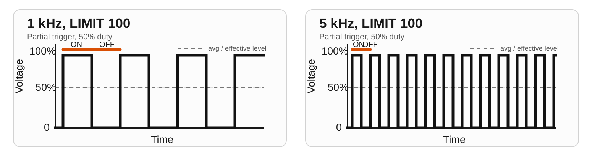
1 kHz usa impulsi meno numerosi e piu larghi, mentre 5 kHz usa impulsi piu numerosi e piu stretti nella stessa finestra di tempo.Scenario 2: trigger al massimo con LIMIT 70
Confronta anche queste due immagini in orizzontale. Entrambe mostrano trigger al massimo, ma LIMIT 70 tiene il livello effettivo a 70% duty. Anche qui la linea tratteggiata indica il livello medio o effettivo.
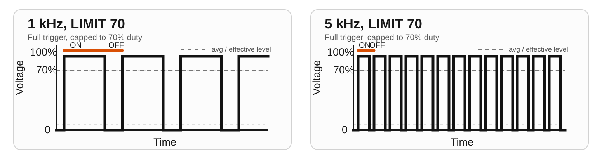
PWM_F cambia la frequenza degli impulsi, non il limite stesso.6. SETTINGS, POWER e consumo stimato
SETTINGS raccoglie le opzioni globali di sistema che non appartengono a un singolo profilo auto.
Sottomenu POWER
SCRSV: testo screensaver, timeout e attivazione immediata.SLEEP: sleep automatico + sleep manuale (risveglio con pulsante encoder).DEEP SLEEP: deep sleep automatico (0 o 2-30 min) + manuale.STARTUP: ritardo avvio 0-990 ms.VIN CAL: misura la tensione reale con un multimetro, imposta quel valore sul controller e premi per calibrare la scala ADC. Usalo solo se la lettura VIN e chiaramente fuori valore.
Voci principali di SETTINGS
STATS: mostra o nasconde la voce STATS nel menu principale.A STEP: passo globale encoder per ANTIS, 1-50 ms (default 5 ms). Il valore ANTIS resta comunque per singolo profilo auto.ENC INV: inverte globalmente la direzione dell'encoder se il menu gira al contrario.
Consumo stimato (elettronica controller)
| Stato | Stima | Note |
|---|---|---|
| Avvio | 120 mA | Breve fase di boot e inizializzazione. |
| Uso normale | 100 mA | Uso tipico menu/gara senza WiFi. |
| WiFi attivo | 150 mA | Modalita AP e web server attivi. |
| Screensaver | 80 mA | Display attivo, poca interazione. |
| SLEEP (soft) | 55 mA (stima) | OLED spento, CPU 80 MHz, task motore sospeso. |
| DEEP SLEEP | 10 mA (stima) | Stato quasi spento, riattivazione solo con power cycle. |
Valori stimati, dipendono da tensione di alimentazione, variante hardware e metodo di misura. Il consumo del motore dell'auto e escluso. Questi valori sono stati misurati sul lato 5 V dopo il convertitore step-down. Se misuri invece sul lato 12 V, la corrente risulta diversa e non e direttamente confrontabile, in riferimento al rapporto tra tensione e corrente (U = R * I).
Batteria interna (opzionale)
Alcune varianti hardware possono includere una piccola batteria al litio a 1 cella per regolazioni fuori pista. Si carica quando il controller e alimentato dalla pista oppure da USB. Questa batteria serve per modifiche menu, preparazione prima della gara, cambio corsia o per evitare ritardi se la pista non e ancora alimentata. Non e pensata per uso standalone prolungato.
La durata sotto indica uso del controller senza collegamento alla pista. La corrente di carica puo variare in base a caricatore e hardware, ma se la carica reale e vicina a 200 mA e il controller assorbe circa 100 mA, l'autonomia fuori pista risulta spesso all'incirca doppia rispetto al tempo di carica. Il tempo reale di carica al litio resta comunque un po' piu lungo del calcolo ideale per via della fase finale, che rallenta vicino alla carica completa.
| Batteria | Tempo tipico di carica | Autonomia tipica fuori pista |
|---|---|---|
| 1S Li-ion/LiPo 250 mAh | circa 1.4-1.8 ore | circa 2.0-2.5 ore |
| 1S Li-ion/LiPo 500 mAh | circa 2.8-3.6 ore | circa 4.0-5.0 ore |
7. Consigli di guida
- Cambia un solo parametro alla volta e poi prova 5-10 giri prima del passo successivo.
- Ordine consigliato:
SENSI, poiFADE, poiBRAKE,ANTIS,CURVEe infinePWM_F. - Auto 1/32 su piste con poco grip: prova
ANTISpiu alto (100-150 ms) eCURVEpiu morbida (<50). - Auto 1/24 su piste con molto grip: spesso
ANTISpiu basso (0-40 ms) eCURVE50-70. - Usa
FRENO+ -> Alt.Frenocome strumento temporaneo in curva invece di cambiare BRAKE tra una manche e l'altra. - Usa
FRENO+ -> Rel.Freno QUICKcon zona bassa (5-12%) e livello medio (40-70%) per una frenata anticipata piu netta. ProvaDRAGintorno a 20-50% se vuoi aiuto al rilascio senza zona a output zero. - Se l'auto colpisce troppo forte proprio all'inizio del trigger utile, lascia
SENSIdov'e e prova prima un po' diFADE. - Se l'auto pattina presto all'inizio corsa trigger: abbassa
SENSIo aumentaANTIS. - Se l'uscita di curva sembra pigra: alza leggermente
SENSIo riduciANTIS.
8. WiFi/USB backup, restore e OTA
WiFi
- Apri
SETTINGS -> WIFIper entrare nel sottomenu WiFi. START WIFI/STOP WIFI: avvia o ferma subito il WiFi in background.INFO PAGE: apre direttamente la pagina WiFi e avvia automaticamente WiFi/AP. Uscendo dalla pagina info il WiFi si ferma di nuovo, a meno che il background mode non fosse gia attivo.MOSTRA QR: apre un QR WiFi a schermo pieno per collegare direttamente telefono o tablet all'AP.AUTO OFF: imposta il timeout per il WiFi in background (1-120 min, default 5 min).- Quando il WiFi e attivo: collegati all'AP
ESPEED32_XXXX(passwordespeed32) e apri l'IP mostrato sull'OLED nel browser (tipicamente192.168.4.1). - Nella info page trovi
Backup,Restore, l'Advanced Config Editor,Upload Firmwaree/docs.
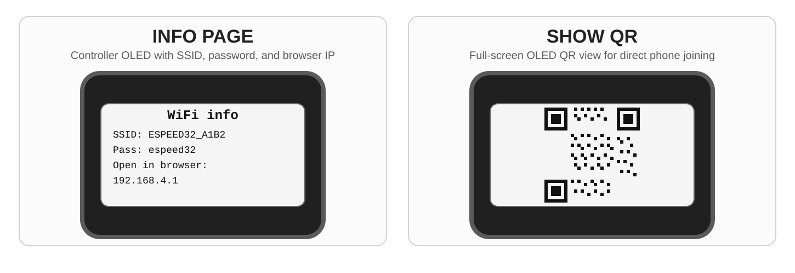
Il WiFi aumenta l'assorbimento dell'elettronica del controller da circa 100 mA a circa 150 mA, quindi di circa il 50% in piu. Sui modelli con batteria, usa il WiFi con cautela e spegnilo quando non serve piu.
Comportamento della barra di stato con WiFi attivo: WIFI usa il primo slot vuoto; se non esistono slot vuoti, lo slot 4 viene mostrato temporaneamente come WIFI finche il WiFi non si ferma.
Advanced Config Editor
- Il portale nel browser include anche un
Advanced Config Editorper regolare il setup dal vivo. Global Configmodifica le impostazioni globali del controller.Car Paramsmodifica il profilo auto selezionato.- In
Car Paramspuoi caricare e modificare qualsiasi profilo direttamente dal menu a tendina, anche se sul controller e attivo un altro profilo. Refresh from devicerilegge i valori correnti direttamente dal controller.Apply (RAM only)ti permette di provare le modifiche dal vivo senza scrivere subito in flash. E' l'ideale per testare in pista freno, gas, anti-spin, curva, fade o release brake.Apply + Save to flashsalva in modo permanente gli stessi valori quando il test live ti soddisfa.- Sulla pagina WiFi del controller l'editor funziona direttamente nel browser via WiFi. Su
espeed32.com, invece, richiede USB/WebSerial.
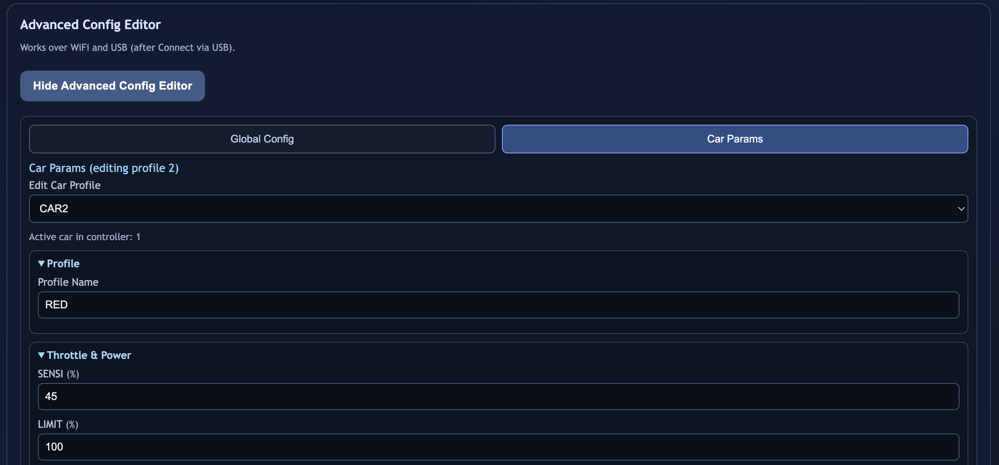
Car Params con selezione profilo e impostazioni auto modificabili dal vivo. L'interfaccia dell'editor e mostrata in inglese qui, ma il flusso di lavoro e lo stesso in tutti i manuali.USB
- Apri
SETTINGS -> USB INFO. - Usa Chrome/Edge (WebSerial).
- Backup/restore funzionano via USB; OTA richiede la modalita WiFi.
Non togliere mai alimentazione durante un upload OTA.
9. Albero menu (mappa completa UI)
ROOT (Main Menu) |- BRAKE |- SENSI |- ANTIS |- CURVE (graph view) |- FADE (graph view) |- PWM_F |- FRENO+ | |- Alt.Freno (%) | |- Rel.Freno (OFF/QUICK/DRAG) | |- Zona (%) [solo QUICK] | |- Quick (%) [modo QUICK] | |- Drag (%) [modo DRAG] | `- Back |- LIMIT |- SETTINGS | |- POWER | | |- SCRSV | | | |- NOW | | | |- LINE1 | | | |- LINE2 | | | |- TIME (0-240 s, 0=OFF) | | | `- BACK | | |- SLEEP | | | |- SLEEP NOW | | | |- INTERVAL (0-10 min, 0=OFF) | | | `- BACK | | |- DEEP SLEEP | | | |- SLEEP NOW (power-off) | | | |- INTERVAL (0 or 2-30 min) | | | `- BACK | | |- STARTUP (0-99 x 10ms) | | |- VIN CAL | | `- BACK | |- DISPLAY | | |- RACE MODE (OFF/FULL/SIMPLE) | | |- LANGUAGE (NOR/ENG/CS/ACD/ESP/DEU/ITA) | | |- CASE (UPPER/Pascal) | | |- FONT SIZE (LARGE/small) | | |- STATUS BAR | | | |- SLOT 1 | | | |- SLOT 2 | | | |- SLOT 3 | | | |- SLOT 4 | | | `- BACK | | `- BACK | |- SOUND | | |- BOOT (ON/OFF) | | |- RACE (ON/OFF) | | `- BACK | |- STATS (ON/OFF) | |- A STEP (1-50 ms, default 5) | |- ENC INV (ON/OFF) | |- WIFI | | |- START/STOP WIFI | | |- INFO PAGE | | |- MOSTRA QR | | |- AUTO OFF (1-120 min, default 5) | | `- BACK | |- USB INFO | |- RESET | | |- CAR | | |- SETTINGS | | |- CALIBRATION | | |- EVERYTHING | | `- BACK | |- TEST (Self-Test, 9 steps) | |- ABOUT | `- BACK |- STATS `- CAR |- SELECT |- RENAME |- RACESWP (grid car select ON/OFF) |- COPY |- RESET `- BACK